my favourite synth!! a perfect mix of modern and vintage, sample-based oscillators through an analogue filter etc, with binaural mode (super cool stereo imaging) and built-in roland-style choruses. this synth is 100% sweet spots, i use it on everything! (audio is running through an eq and valhalla vintageverb)
sequential prophet rev2
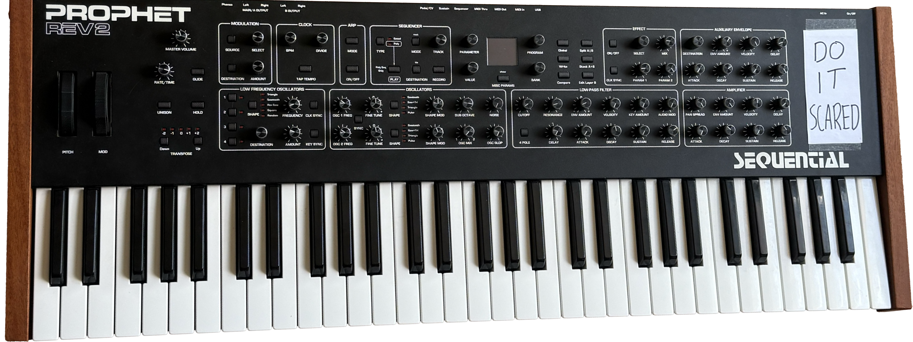
my first polysynth back in march 2024! a workhorse, great for the traditional prophet sounds and can go so deep with modulation options (audio is running through hologram chroma console, an eq, valhalla vintageverb and a sidechain compressor)
korg opsix (module)
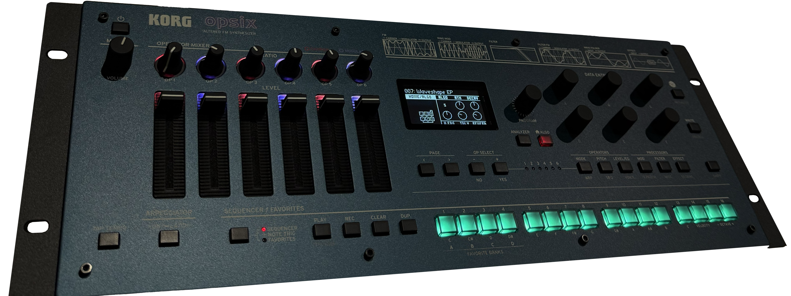
a super powerful little fm synth, with probably the easiest fm editor i have found (so much more intuitive than a dx7!) incredibly versatile and can sound rich and warm or cold and glassy if you want it to (audio is running through an eq, valhalla delay and vintageverb)
whimsical raps atrium
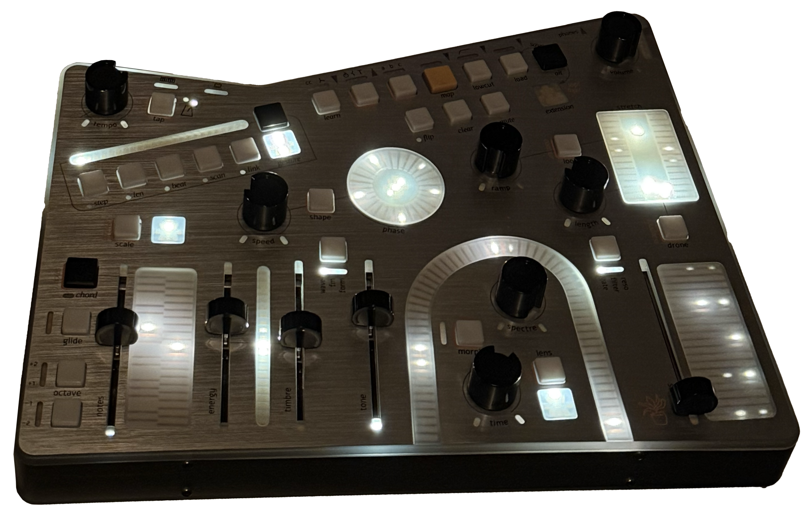
such a unique polyphonic analogue synth, one of the most beautiful machines i have played! gesture recorders, expressive touchplates, and insanely deep modulation. you can modulate any parameter polytimbrally, which means each of the 5 notes can have different things applied to it (audio is running through an eq, subtle waveshaper, valhalla delay and vintageverb, and a sidechain compressor)
sequential fourm
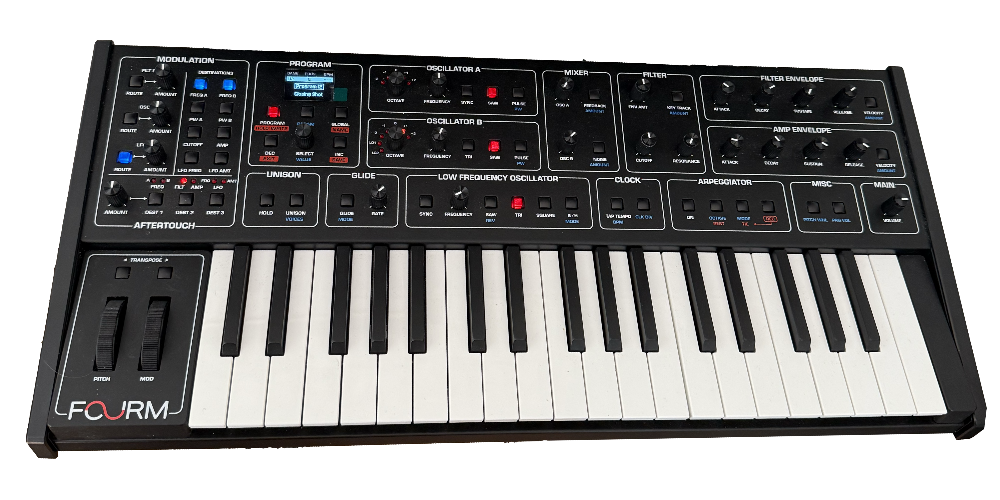
a great little VCO-based poly, basically a 4-voice prophet-5. very simple but an amazing raw sound! i mostly got it for easy portability, so i play live with it often
my first ever synth, so holds a special place in my heart! an absolute beast and wonderful for the classic moog sound, especially for plucky arps and ground-shaking basses
korg ms-20 mini
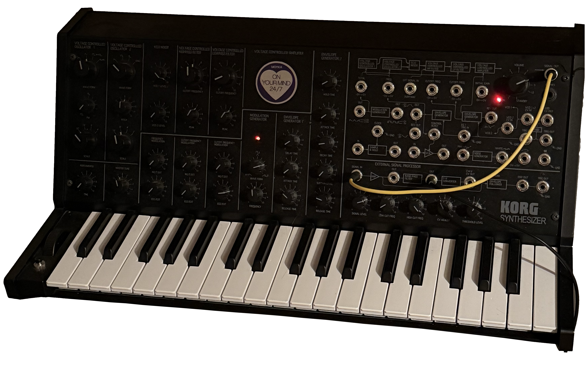
my first semi-modular, which took me down the rabbit hole of patching and eventually into modular! my fav for weird leads, and i love cranking the resonances of the dual filters to get nasty, growling basses
roland tb-03
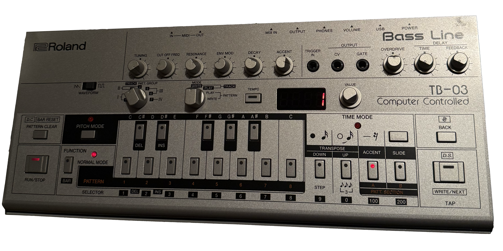
ACIIIIDDDD!! i bought this second-hand recently after playing around with the roland cloud plugin, and it does a fantastic emulation of the 303! despite what you might think, i have found it can fit really well into atmospheric music :) (audio is two tracks an octave apart, both running through an eq, valhalla delay, and a sidechain compressor)
roland system-1m
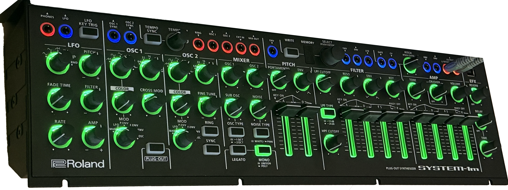
a lovely roland mono with modular capabilities, can also be used as a 'plug-out' synth (basically loading a VST plugin onto the synth itself! i normally use the sh-101). can do 4 voice polyphony if needed too!
moog mother-32
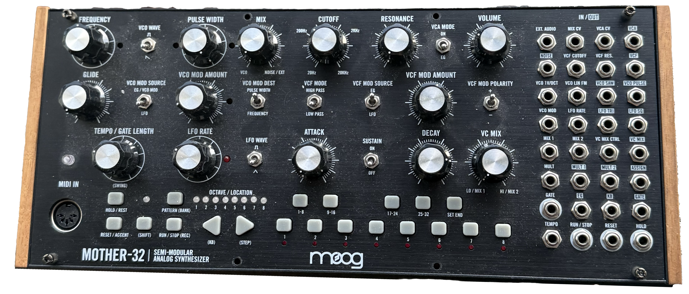
i wanted a modular moog, and this thing sounds great! really snappy envelopes so i especially love it for arps. also really useful utilities for a modular setup, as you can patch everything in/out seperately - so can add an extra oscillator, filter, vca, envelope, lfo and 32 step sequencer to a system!
my go-to drum machine recently! 8 digital and 4 analogue machines and the famously powerful elektron sequencer, it makes awesome drums and you can also use it as a groovebox with lots of really useful synth sounds
roland tr-8s
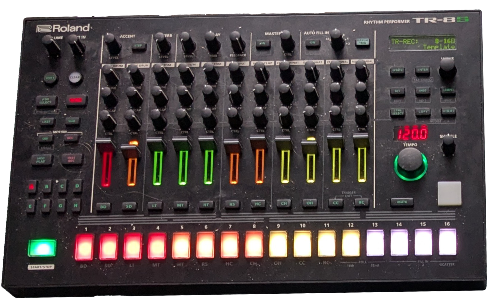
my first drum machine, brilliant digital emulations of the roland drum sounds - 606,707,727,808,909,CR78, etc! can also play samples and do all sorts of cool stuff
manifold research centre antilope
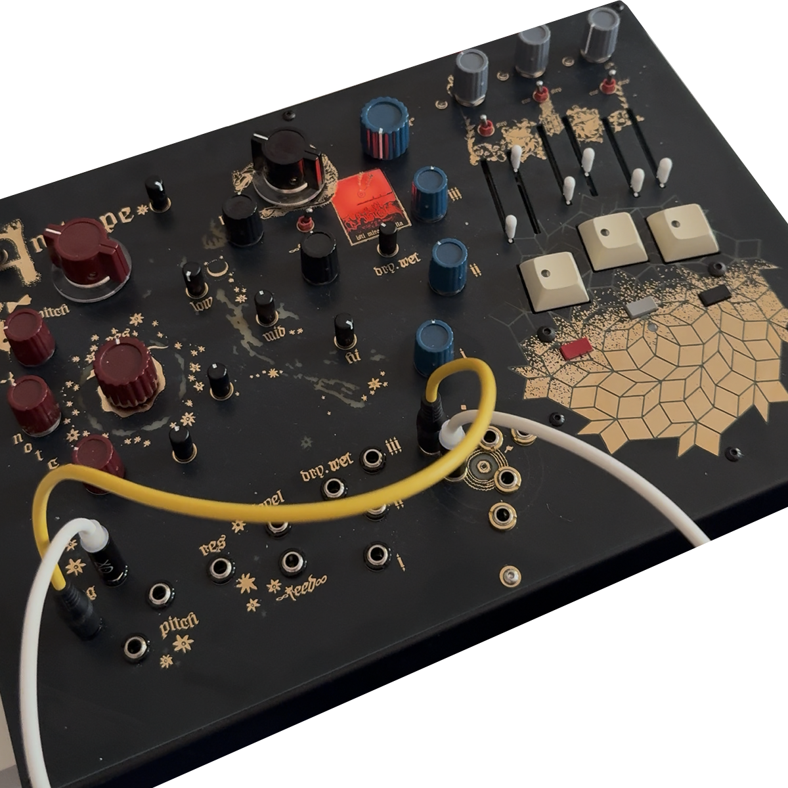
an 'anti-drum machine', made of a dual pingable resonant filter, distortion circuit and fx. you can use this as a standalone drum synth, but for me, it's normally an effects processor for my syntakt. putting hats and snares into this thing creates some amazing stereo textures!
moog dfam
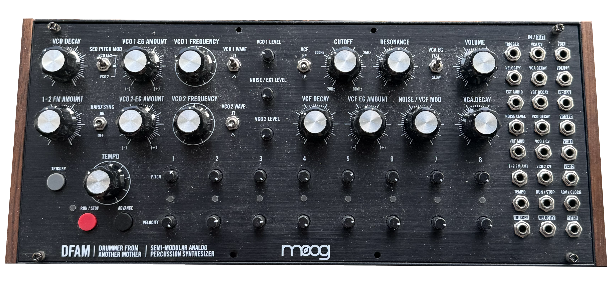
an analogue percussion synth, something of a surprise for me as most demos are hard hitting/techno but it finds its way into most things i make! my favourite for percussive textures, but can get nasty if you want. the patch bay really adds an extra dimension (audio is running through strymon magneto, an eq, valhalla vintageverb and delay, and a sidechain compressor)
an analogue spectral processor, whatever that means! functions brilliantly as a fixed filter bank to process other signals, can do some physical modelling with resonance cranked up, and also can be used as a vocoder. i think it shines best with percussion running through it, just adding a little extra spice! semi-modular, so integrates nicely with eurorack stuff too